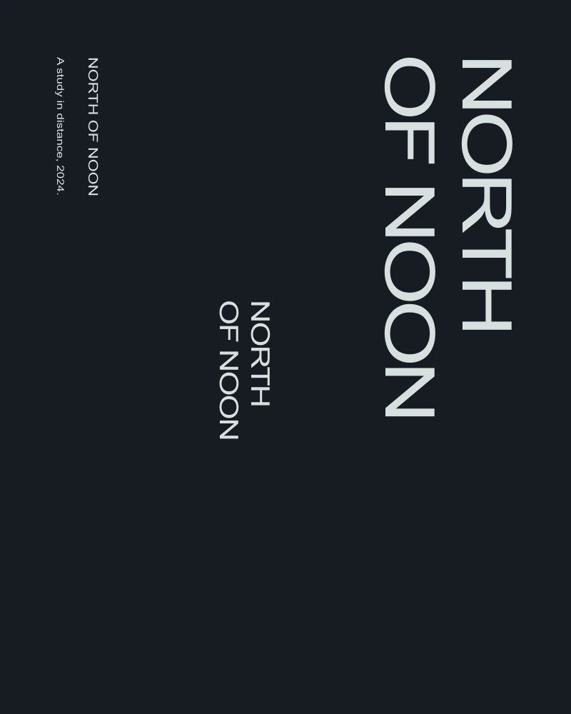

The starting point
North of noon began as a phrase in a notebook rather than a commission. I wanted to see whether repetition could create a sense of direction without arrows, maps or a literal horizon.
A graphic decision
The words repeat at three scales. The smallest line is not a caption; it is a distant occurrence of the same phrase. Reading becomes a movement through the sheet, with the eye traveling between near and far rather than following one centered title.
A system, in use
Each variation preserves the order of the words but changes their alignment. One uses a strong left edge, another separates the words across the page, and a third compresses them into a narrow column. The family resemblance comes from rhythm rather than a fixed template.
At reading distance
The spaces between letters were adjusted for the printed scale. At small sizes, the phrase needs openness; at large sizes, the same spacing can feel loose. The specimen control on this page lets a visitor observe that relationship with their own short phrase.

Try the spacing
A small live typesetting study. Change the phrase or the interval between letters.
Limits and next questions
This is a personal typographic experiment with no client or public campaign. The work is shown as a process study. The exported specimen is a plain text note of the visitor’s settings, not a font file or a commercial print order.